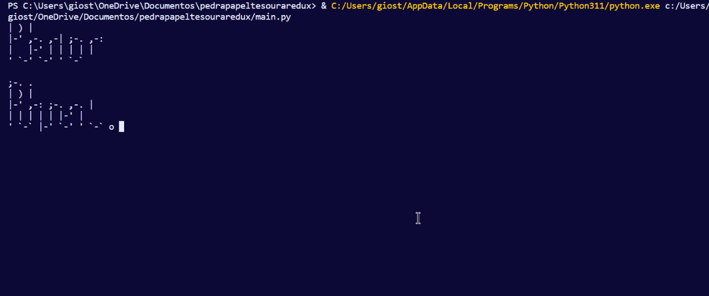
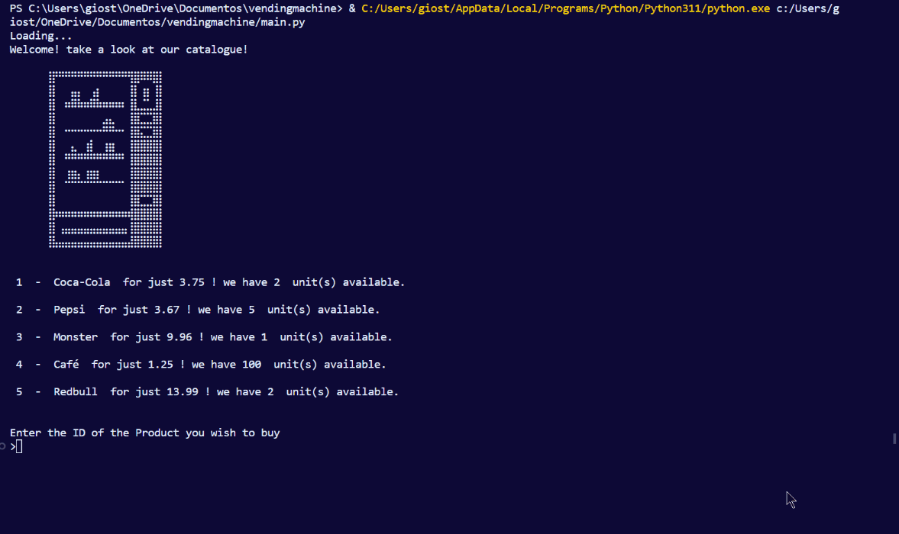

Projetos Lógica Algorítmica
Ao todo foram passados dois projetos como RA para serem desenvolvidos em python:
Pedra, Papel, Tesoura.
Github

Uma simples aplicação em python que permite ao jogador organisar infinitas partidas de pedra papel tesoura,
no caso da minha aplicação, ela conta com alguns extras, como gráficos em ASCII e Emojis.
Foi muito tranquila de desenvolver.
Maquina de Vendas
Github

Esta aplicação era mais complexa, precisavamos construir uma máquina de vendas que também tivesse um Painel
de administrador para cuidar de coisas como entradas no estoque. No caso da minha aplicação
existe também a possibilidade de depositar e tirar dinheiro do banco da máquina, assim como alguns gráficos
ASCII rudimentares.
A maior dificuldade deste RA foi com certeza o sistema de trocos, a lógica nescessária em si foi fácil de descobrir,
mas lidar com limitações do python como a imprecisão de contas com float e a refêrencia em vez de copia de listas
fez este componente do desenvolvimento o mais complicado.